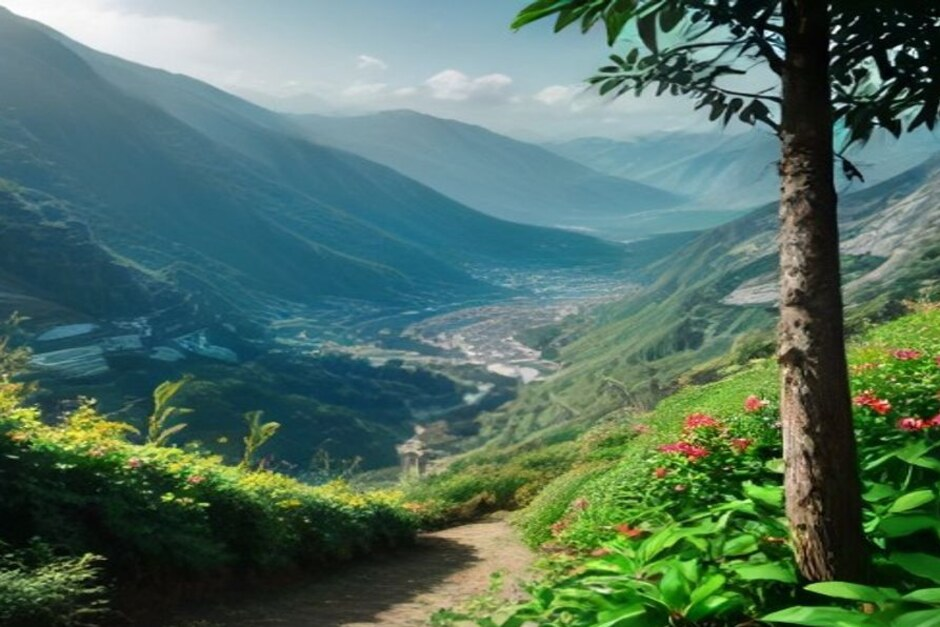
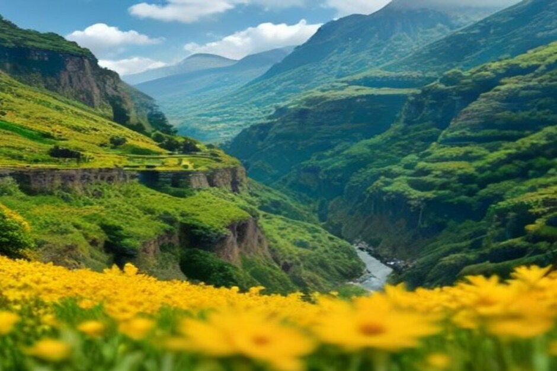

O Madeira Nature Festival, ou Festival da Natureza, é a semana em que a ilha põe a serra, as levadas e a costa no centro do programa. A edição de 2026 estava marcada para 6 a 11 de outubro. Fica aqui o que se sabe sobre as datas, o que incluía, como funcionam as reservas e o que fazer quando o festival acaba e ainda quer conhecer a Madeira.
Nature Festival 2026: datas e ponto de situação
A edição de 2026 do Madeira Nature Festival decorreu entre 6 e 11 de outubro, seis dias seguidos. Se está a ler isto depois dessa semana, a notícia prática é simples: o programa de 2026 já passou, e as datas da próxima edição devem ser confirmadas no calendário oficial de eventos do Visit Madeira, que é onde o festival é listado a par dos outros eventos de outono da ilha.
Não vale a pena fiar-se em datas "de cabeça" de um ano para o outro. Um festival destes é anunciado pela organização, e o programa detalhado, local a local, costuma fechar-se perto da data.
O que é, afinal, o festival da natureza da Madeira
Quem espera um recinto com palco e bilhete à entrada engana-se. O Nature Festival é um programa descentralizado: atividades de turismo de natureza dadas por operadores registados, em vários pontos do arquipélago, para residentes e visitantes. Pense nele como uma montra concentrada numa semana, em vez de ter de procurar operador a operador.
Para quem vive na Madeira, o interesse é outro: experimentar o que se vê todos os dias da janela, mas nunca se marcou. Um canyoning, uma prova de trail, um percurso guiado por um trilho que só conhecia de nome.

Programa: o que se podia fazer
O núcleo do programa são as atividades que mais associamos ao interior da Madeira:
- caminhadas guiadas;
- canyoning;
- BTT;
- trail running.
Em 2026 a organização acrescentou uma vertente de wellness e bem-estar, e quis ligar o turismo ativo à gastronomia, ao enoturismo e à música ao vivo. Na prática, o mesmo dia pode juntar uma manhã de aventura e um fim de tarde com vinho ou um concerto por perto.
Onde decorre: o festival não tem um só sítio
Cada concelho recebe a sua parte do programa ao longo da semana. É de propósito: a ideia é levar as pessoas a freguesias e inícios de trilho que normalmente ficam de fora do circuito dos miradouros mais fotografados.
Isto tem uma consequência prática para quem se desloca de carro ou de autocarro: antes de escolher o alojamento, veja onde ficam as atividades que lhe interessam. Não faz sentido dormir no Funchal e descobrir que a sessão das 8h30 é do outro lado da ilha.
Reservas e preços: é gratuito?
Depende da atividade. Algumas palestras, demonstrações e sessões de apresentação são abertas ao público, sem custo. As atividades guiadas, que são a maior parte do programa, funcionam através de operadores registados e são reservadas e pagas individualmente, como em qualquer outra semana do ano.
As vagas são limitadas. A regra é consultar o calendário oficial do Visit Madeira assim que o programa detalhado sair e reservar logo, em vez de aparecer no próprio dia à espera de lugar.

Porque é que outubro funciona tão bem na Madeira
O festival cai numa janela confortável. O Atlântico ainda guarda o calor do verão, a afluência da época alta nos trilhos mais conhecidos já baixou e, na serra, o tempo costuma estar mais estável do que em dezembro. Costuma, não é garantido: na montanha convém sempre olhar para a previsão na véspera.
Na costa, o mês continua a servir para banhos e para passeios de barco. É por isso que muita gente aproveita a semana para fazer as duas coisas.
Um dia de trilho, um dia de mar
Tudo o que está no programa do festival acontece em terra. A água fica livre, e é aí que a Chifbay entra: faz passeios de barco privados a partir da Marina do Funchal, Pontão C, durante todo o ano. O barco é só para o seu grupo, até 5 pessoas, com dois skippers licenciados da Madeira, num Karnic R8S de 2026.
Para depois de um dia de pernas cansadas, há duas opções:
- Passeio de dia. Sai às 10h00 ou às 14h00. São 2h30 até à Ribeira Brava por 500 EUR, ou 3h até à Ponta do Sol por 600 EUR. Passa por Câmara de Lobos e pelo Cabo Girão, com banho e pranchas de paddle na Fajã dos Padres. Veja o passeio de dia.
- Passeio ao pôr do sol. Sai 1h15 antes do pôr do sol. São 2h até ao Cabo Girão por 400 EUR, ou 2h30 até à Ribeira Brava por 500 EUR, sem paragem para banho. Veja o passeio ao pôr do sol.
Os preços são para o barco inteiro, nunca por pessoa. Comida e bebidas a bordo estão incluídas, tal como um vídeo 360° Insta360, imagens de drone (se o tempo deixar) e fotografias tiradas com uma câmara a sério. O cancelamento é gratuito até 24 horas antes da partida, o que ajuda quando o programa do festival e a meteorologia ainda não estão fechados.
O festival mostra a natureza da Madeira por dentro. O barco mostra a mesma ilha por fora, a olhar para trás.
Como organizar a semana, em poucas linhas
- Confirme as datas e o programa no calendário oficial do Visit Madeira.
- Reserve primeiro as atividades guiadas, que têm vagas limitadas.
- Deixe um dia livre para o mar, escolhido consoante a previsão.
- Para mais pormenores sobre o ponto de encontro e o que levar, veja as informações práticas, e para comparar opções, os melhores passeios de barco na Madeira.
Golfinhos, baleias, luz dourada e bom tempo não se prometem: quando aparecem, são um presente. O resto, o mar, a costa e o Cabo Girão visto de baixo, está lá todos os dias.